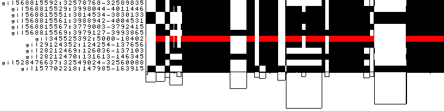
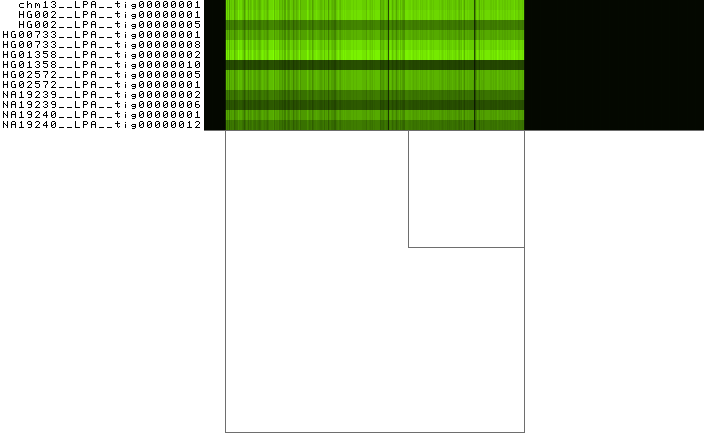

Exploratory analysis¶
Synopsis¶
Visualizing pangenome graphs we can gain insight into the mutual relationship between the embedded genomes and their variation. However, complex, nonlinear graph structures are difficult to present in a convenient number of dimensions. odgi viz offers a binned, linearized 1-Dimensional rendering. It is able to display gigabase scale pangenomes, and several visualization modalities to grasp the complexity in the graphs.
Steps¶
Build the DRB1-3123 graph¶
Assuming that your current working directory is the root of the odgi project, to construct an odgi file from the
DRB1-3123 dataset in GFA format, execute:
odgi build -g test/DRB1-3123.gfa -o DRB1-3123.og
The command creates a file called DRB1-3123.og, which contains the input graph in odgi format. This graph contains
12 ALT sequences of the HLA-DRB1 gene from the GRCh38 reference genome.
Visualize the DRB1-3123 graph¶
To visualize the graph, execute:
odgi viz -i DRB1-3123.og -o DRB1-3123.png -x 500
To obtain the following PNG image:

In this 1-Dimensional visualization:
The graph nodes are arranged from left to right, forming the
pangenome sequence.The colored bars represent the the paths versus the
pangenome sequencesin a binary matrix.The path names are visualized on the left.
The black lines under the paths are the links, which represent the graph topology.
See odgi viz documentation for more information.
Color with respect to the node position¶
This is a linearized visualization, but the pangenome graphs are not linear when the embedded genomes present structural variation. However, a graph can be optimized for being better visualized in 1-Dimension by sorting its nodes properly (see the Sorting and Layouting tutorial for more information).
To color the bars with respect to the node position in each path, execute:
odgi viz -i DRB1-3123.og -o DRB1-3123.du.png -x 500 -d -u
To obtain the following PNG image:

For each path, the brightness goes from light (for the starting position) to black (for the ending position). A linear
genome in a well-sorted graph appears with a smooth brightness gradient in this visualization modality. -d changes
the color darkness based on the nucleotide position in the path. -u sets the color darkness range from white for
the first nucleotide position of a path to black for the last nucleotide position of a path.
Interestingly, the >gi|345525392:5000-18402 path has a brightness gradient which go from right to left. DNA sequence
graphs have two strands, with the node implicitly representing both strands. That gradient indicates that the path is
reversed with respect to the pangenome sequence.
Color with respect to the node strandedness¶
To color the bars with respect to the strandedness that each node has in each path, execute:
odgi viz -i DRB1-3123.og -o DRB1-3123.z.png -x 500 -z
to obtain the following PNG image:
-z changes the color palette to respect the node strandedness. Black is forward, red is reverse.
The red bar in a path indicates that that region is inverted in that path with respect to the pangenome sequence.
Build the Lipoprotein A graph¶
Assuming that your current working directory is the root of the odgi project, to construct an odgi file from the
LPA dataset in GFA format, execute:
odgi build -g test/LPA.gfa -o LPA.og
The command creates a file called LPA.og, which contains the input graph in odgi format. This graph contains
13 contigs from 7 haploid human genome assemblies from 6 individuals plus the chm13 cell line. The contigs cover the
Lipoprotein A (LPA) locus, which encodes the
Apo(a) protein.
Visualize the LPA graph¶
To visualize the graph, execute:
odgi viz -i LPA.og -o LPA.b.png -x 500 -b
To obtain the following PNG image:

Color with respect to the node depth in a path¶
Eukaryotic genomes are characterized by repetitive sequences. These sequences can lead to complex regions in the pangenome graphs. To identify them, we can analyze the depth in the graph. Here we define node depth in a path as the number of times the node is crossed by a path.
To color the bars with respect to the mean depth, execute:
odgi viz -i LPA.og -o LPA.bm.png -x 500 -bm
To obtain the following PNG image:

Low depth regions are black, while high depth regions are colored green. Apo(a) proteins vary in size due to a size
polymorphism, the KIV-2 variable numbers of tandem repeats (VNTRs). The VNTR region in the LPA pangenome presents high
depth, that becomes evident as a light green stripe in the image. -b explicitly forces odgi viz to bin the
graph before visualizing it. -m changes the color palette to display the mean depth per bin as a shade of green.
Visualize a particular region¶
To obtain the coordinates of the VNTRs, execute:
odgi depth -i LPA.og -r chm13__LPA__tig00000001| \
bedtools makewindows -b /dev/stdin -w 5000 > chm13__LPA__tig00000001.w5kbps.bed
odgi depth -i LPA.og -b chm13__LPA__tig00000001.w5kbps.bed | \
bedtools sort > chm13__LPA__tig00000001.depth.w5kbps.bed
awk -F"\t" '$4 > 20.0' chm13__LPA__tig00000001.depth.w5kbps.bed | \
bedtools merge
chm13__LPA__tig00000001 140000 275000
The chm13__LPA__tig00000001.w5kbps.bed file contains 5000 bp interval windows across the chm13__LPA__tig00000001
contig. The depth is computed for each of these windows, writing the result in the
chm13__LPA__tig00000001.depth.w5kbps.bed file, in BED format. -r specifies the path name from which to
compute the depth from. -b specifies the BED ranges of which the depths should be calculated of.
To visualize the identified region, execute:
odgi viz -i LPA.og -o LPA.bm.VNTRs.png -x 500 -bm -r chm13__LPA__tig00000001:140000-275000
To obtain the following PNG image:
